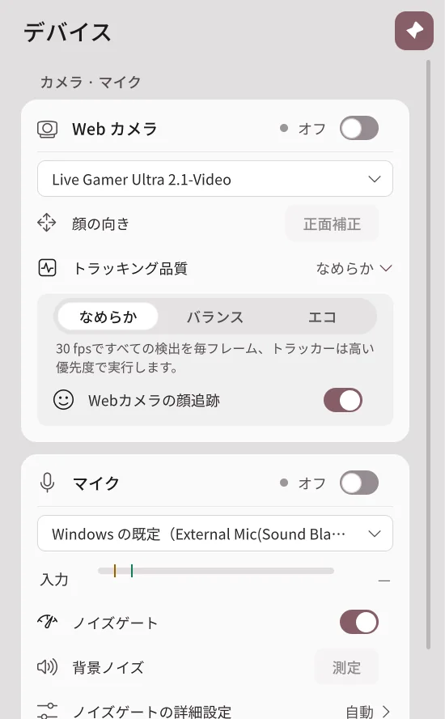
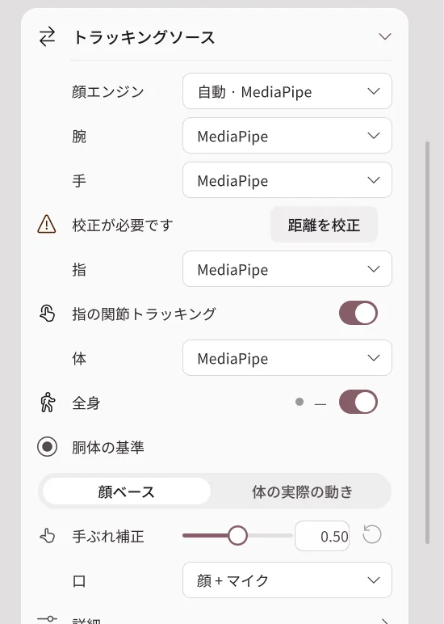
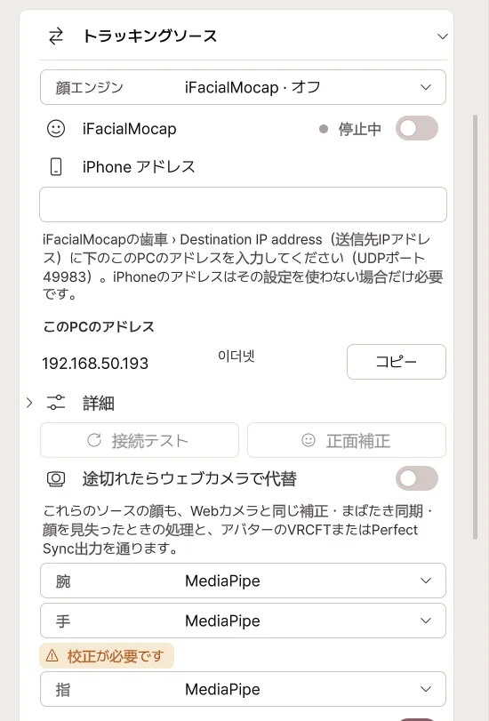
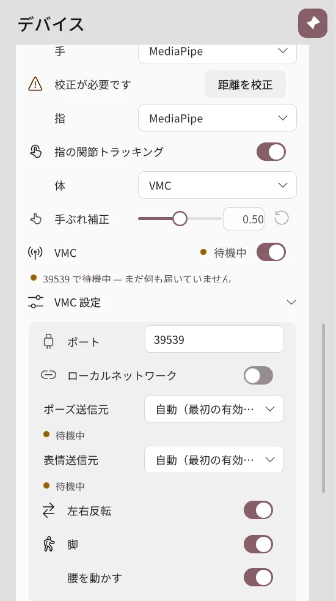
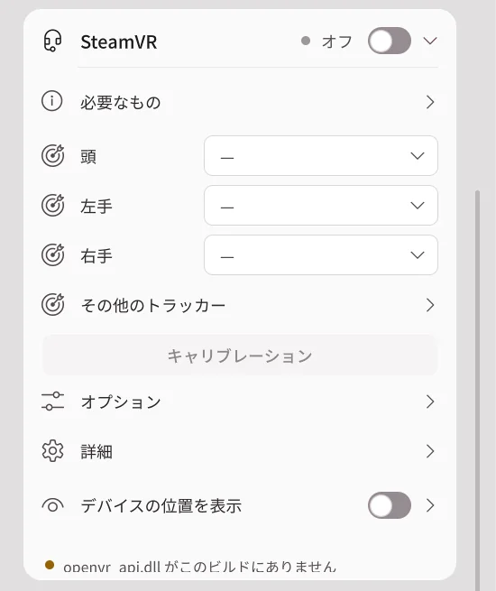

デバイス
ウェブカメラ・マイク・トラッカーを接続し、顔・体・手で使用する入力を選びます。
ウェブカメラとマイク

| ボタン・項目 | 動作 |
|---|---|
| ウェブカメラスイッチ | 選択したカメラでトラッキングを開始または停止します。 |
| カメラリスト | 使用するウェブカメラを選びます。 |
| 正面補正 | 今向いている方向をアバターの正面に合わせます。 |
| トラッキング品質 | スムーズは動きを頻繁に計算します。バランス・節約はPC負荷を減らします。 |
| マイクスイッチ | 選択したマイクで口の動きを開始または停止します。 |
| 入力バー | 声の大きさを表示します。話すときに動くか確認してください。 |
| ノイズゲート | 小さな音では口が開かないようにします。 |
| 背景雑音測定 | 話していない間の音を測定して雑音基準を設定します。 |
ノイズゲートの基準を上げるとキーボード音に反応しにくくなりますが、小さな声も無視されることがあります。口がうまく動かない場合は基準を下げてみてください。
トラッキングソース

顔・口・頭・目・腕・手・指・体をそれぞれ何で動かすかを選びます。
| 選択 | 使用する時 |
|---|---|
| ウェブカム | カメラに映る自分の顔・体・手の動きに合わせて動きます。 |
| iPhone | iPhone 顔アプリで表情と頭の動きを動かします。 |
| VMC | 他のモーションキャプチャアプリやトラッカーアプリの動作を受け取ります。 |
| Ultraleap | 専用の手トラッカーで手を動かします。 |
| SteamVR | HMD・コントローラー・トラッカーを体の部位に接続します。 |
| オフ | その部位には該当するトラッキング入力を使いません。 |
例: 顔は iPhone、腕と手はウェブカムに設定できます。 デバイスが接続されていても、部位のソースが別の入力を指していると動きません。
ウェブカム 全身と指
- 全身: カメラに映る胴体と脚を追跡します。机に隠れた脚は実際に見える通りには追跡されません。
- 指関節の追跡: 指の関節の曲げ伸ばしに合わせて動きます。
- 手の震え補正: 高くすると微細な震えが減り、速い動きは少し遅れてついてきます。
iPhone 接続

- iPhoneとPCを同じWi-Fiに接続します。
- 顔エンジンで iFacialMocap または FaceMotion3D を選びます。
- このPCのアドレスをコピーし、携帯アプリの送信先アドレスに入力します。
- 入力スイッチを入れて、正面をしばらく見ます。最初の顔入力の後、約3秒で開始補正が行われます。
- 接続テストでデータが入ってくるか確認します。
| 項目 | オンにするか変更すると |
|---|---|
| ミラー | 左右の動きを鏡のように反映します。 |
| 接続が切れたらウェブカメラに切り替え | 携帯電話の接続が切れている間、ウェブカメラに切り替えます。 |
| iPhone アドレス | 携帯アプリにPCアドレスを入れない方式で使用します。通常の接続では空白のままにできます。 |
VMC 接続

- 送信するアプリでVMC送信をオンにし、このPCの受信アドレス・ポートに送ります。
- トラッキングソースで受け取る部位をVMCで選びます。
- VMC 設定で受け取った本数と入力状態が表示されるか確認します。
- 体の向きや腕がずれていたら、T字姿勢や整列で合わせます。
VMCトラッキング動作確認済み機器： ReboCap、HTC VIVE Tracker、Tundra Tracker。
SteamVR 接続

- SteamVRでHMD・コントローラー・トラッカーが認識されるか確認します。
- デバイス → SteamVRを起動します。
- 装置を頭・手・体などの該当部位に接続します。
- 補正を実行して、アバターと自分のデバイスの位置を合わせます。
装置の接続は正常なのに動きがおかしい場合は、動作で滑らかさ・補正・追跡復帰の設定を確認してください。